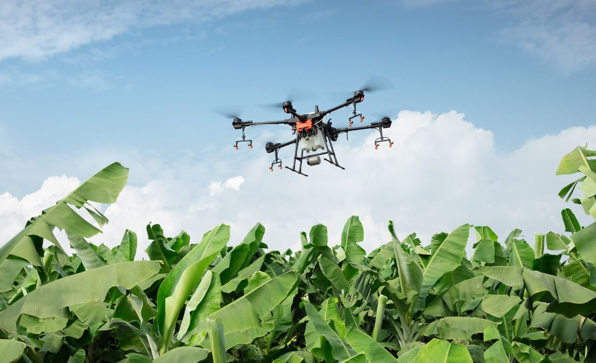

Agricultural Plot Management
Manage your crops and follow the state of your plots with maps and notifications.
Centralize the management of your plots, automate their analysis, and detect anomalies before they affect your harvest. All on a single platform.

Discover our tools designed to help you
Manage your crops and follow the state of your plots with maps and notifications.
Plan flight routes to capture images and support crop monitoring.
Review image analysis to identify crop conditions that need attention.
Explore crop reports in an organized history and compare seasons.
See how SkyCrop can help you
Care for your crops with clearer information and earlier attention to risks.
Support your technical evaluation and agronomic diagnosis.
Choose the plan that best suits your needs
Demonstration proposal. Prices and limits are illustrative; no subscriptions or payments are processed.
S/ 30 per month
S/ 50 per month
Let’s talk about your team